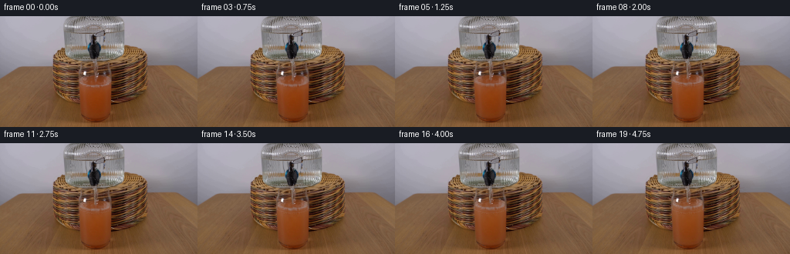
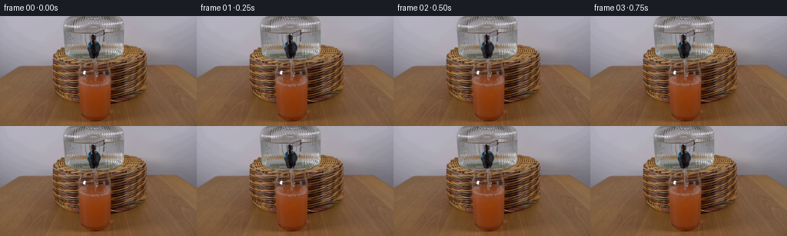
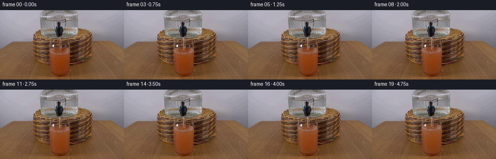

CODING AGENTS AS PIXEL WORLD MODELS
traex/GPT-6.1-Sol · 0185
点击播放 · 原生 RGB 像素
逐轮保存的候选
回放视频、检查图与代码变化。
每份候选均可单独播放。实际图片检查记录在下方工具轨迹中。
候选 01播放与检查图
点击播放 · 原生 RGB 像素


展开代码变化
--- 上一保存版本
+++ 本次保存版本
@@ -0,0 +1,137 @@
+from pathlib import Path
+import numpy as np
+from PIL import Image
+from scipy.ndimage import map_coordinates, gaussian_filter
+import artifact_io
+
+ROOT=Path(__file__).resolve().parent
+S=4
+H,W=144,256
+
+def smooth(a,b,v):
+ z=np.clip((v-a)/(b-a),0,1)
+ return z*z*(3-2*z)
+
+def generate():
+ original=np.array(Image.open(ROOT/'first_frame.png').convert('RGB'))
+ src=original.astype(np.float32)
+ yy,xx=np.mgrid[0:H*S,0:W*S].astype(np.float32)
+ x=(xx+.5)/S-.5; y=(yy+.5)/S-.5
+ def sample(xp,yp):
+ coords=[np.clip(yp,0,H-1),np.clip(xp,0,W-1)]
+ return np.stack([map_coordinates(src[...,c],coords,order=1,mode='nearest') for c in range(3)],axis=-1)
+ base=sample(x,y)
+ frames=[original]
+ cx=123.0; rx=20.6; ry=6.0; initial=84.0
+ u=(x-cx)/rx
+ edge=np.sqrt(np.maximum(0,1-u*u))
+ # Glass walls are retained, including their immutable specular glints.
+ side=smooth(102.2,104.0,x)*(1-smooth(141.0,143.3,x))
+ bottom=1-smooth(129.5,134.0,y)
+ lip=np.exp(-((x-109.5)/2.1)**4-((y-73.6)/3.1)**4)
+ lip+=.6*np.exp(-((x-125.4)/1.8)**2-((y-78.0)/.75)**2)
+ # Noise is entirely procedural, and advected slowly with the mixing flow.
+ rng=np.random.default_rng(64)
+ noise=gaussian_filter(rng.normal(size=(H*S,W*S)).astype(np.float32),3.7)
+ noise/=noise.std()
+ for i in range(1,20):
+ t=i/4
+ active=smooth(.02,.17,t)
+ rise=7.6*(t-.03)/4.72
+ cy=initial-rise
+ back=cy-ry*edge
+ front=cy+ry*edge
+ fillmask=side*bottom*smooth(back-.35,back+.45,y)
+ fillmask*=1-np.clip(lip,0,.97)
+ # Transport the original liquid surface and its photographed reflection,
+ # keeping the lower glass and foot fixed. Smooth flow refraction does
+ # not introduce motion into the tabletop or stationary glass outlines.
+ height_weight=np.clip((113-y)/(113-(cy+6)),0,1)
+ mapped_y=y+rise*height_weight
+ flowing=np.exp(-((x-122.5)/10.2)**2)*np.exp(-((y-(cy+9))/15.0)**2)
+ shiftx=active*.45*np.sin((y-cy)*.42+t*3.4)*flowing
+ shifty=active*.35*np.sin((x-121)*.6-t*3.9)*flowing
+ liquid=sample(x+shiftx,mapped_y+shifty)
+ # Gentle dilution and scattered warm light, rather than an opaque new
+ # liquid. The fixed vertical glass-wall highlights remain photographic.
+ dilution=(rise/(52+rise))
+ mix=np.exp(-((y-(cy+13))/23)**2)
+ glow=np.stack([8+8*mix,48+38*mix,56+35*mix],axis=-1)*dilution
+ liquid+=glow
+ moving_noise=map_coordinates(noise,[np.clip(yy-t*6,0,H*S-1),np.clip(xx+3*np.sin(t+y*.12),0,W*S-1)],order=1)
+ swirl=(np.sin((x-123)*.52+np.sin((y-cy)*.21-t*1.6)*2.1+t*.7)
+ +.45*np.cos((y-cy)*.48+np.sin((x-121)*.28+t)*2.6))
+ mixing=active*flowing*(1-np.exp(-t))
+ liquid+=(swirl*2.0+moving_noise*.65)[...,None]*mixing[...,None]*np.array([.65,1,1.05])
+ surface=smooth(back-.2,back+1,y)*(1-smooth(front-.5,front+.6,y))*side
+ # Small gravity waves refract and reflect only inside the liquid ellipse.
+ r=np.sqrt((x-122.6)**2+((y-(cy-.4))/.286)**2+.001)
+ rings=np.sin(r*1.65-t*13.7)*np.exp(-r/15)
+ rings+=.4*np.sin(r*2.65-t*19.1)*np.exp(-r/9)
+ liquid+=((rings*5.0)*surface*active)[...,None]*np.array([.76,.92,1.0])
+ out=base*(1-fillmask[...,None])+liquid*fillmask[...,None]
+ def blend(color,alpha):
+ nonlocal out
+ a=np.clip(alpha,0,1)[...,None]
+ out=out*(1-a)+np.asarray(color,dtype=np.float32)*a
+ # Meniscus: an understated broken highlight at the near elliptical edge.
+ meniscus=np.exp(-((y-front)/.40)**2)*side
+ meniscus*=.10*(.75+.25*np.sin(x*.38+t*4))
+ blend([174,134,106],meniscus*active*(1-np.clip(lip,0,1)))
+ # Jet entering the surface: shaded crater and a small sparkling collar.
+ impact_x=122.6+.16*np.sin(t*7)
+ impact_y=cy-.6
+ crater=np.exp(-((x-impact_x)/1.65)**2-((y-impact_y)/.63)**2)
+ blend([86,70,59],crater*.42*active)
+ collar=np.exp(-((np.sqrt(((x-impact_x)/2.55)**2+((y-impact_y)/.91)**2)-1)/.20)**2)
+ blend([183,165,143],collar*.18*active*surface)
+ # Transparent falling water with narrow Fresnel edges. There is no
+ # displacement of the dispenser, spigot, or anything in the background.
+ start=55.25
+ end=impact_y+.10
+ stream_x=122.6+.15*np.sin((y-start)*.50-t*12)*smooth(start,start+8,y)
+ stream_x+=.12*np.sin(t*5)*(y-start)/max(1,end-start)
+ half=.98-.22*smooth(start,start+13,y)
+ half+=.12*np.sin((y-start)*.9-t*15)
+ d=x-stream_x
+ jet=smooth(-half-.22,-half+.12,d)*(1-smooth(half-.12,half+.22,d))
+ jet*=smooth(start-.2,start+.45,y)*(1-smooth(end-.2,end+.5,y))*active
+ refracted=sample(x+1.2*np.sin(d*2.1),y+.45*np.sin(y*1.1-t*16))
+ refracted=refracted*.68+np.array([150,146,139])*.32
+ blend(refracted,jet*.70)
+ # Uneven white reflections, spatially very thin, along the real jet.
+ highlight=np.exp(-((d+.45)/.25)**2)
+ highlights=.38+.21*np.sin(y*.50-t*13)+.10*np.sin(y*1.9-t*17)
+ blend([215,211,203],jet*highlight*highlights)
+ darkedge=np.exp(-((d-half+.06)/.19)**2)
+ blend([69,65,57],jet*darkedge*.25)
+ # Sparse tiny air bubbles advected outward across the liquid surface.
+ for b in range(8):
+ age=(t*1.5+b*.173)%1
+ ang=b*2.399+.25*np.sin(t*1.5+b)
+ rr=2.3+age*7.5
+ bx=impact_x+np.cos(ang)*rr
+ by=impact_y+np.sin(ang)*rr*.26+.55
+ rad=.28+.14*np.sin(b*3.1)**2
+ dist=np.sqrt(((x-bx)/rad)**2+((y-by)/(rad*.67))**2)
+ ba=np.exp(-((dist-1)/.33)**2)*(.24*(1-age))*surface*active
+ blend([195,171,141],ba)
+ # Ballistic micro-splashes are restricted to the impact, not the table.
+ for b in range(3):
+ age=(t*2.6+b*.31)%1
+ vx=[-5.2,4.2,-2.1][b]
+ bx=impact_x+vx*age
+ by=impact_y-7.5*age+8.1*age*age
+ drop=np.exp(-((x-bx)/.23)**2-((y-by)/.36)**2)
+ blend([194,184,166],drop*.28*active*(1-age)*smooth(.08,.18,age))
+ # Downsample only the changing RGB delta, retaining all stationary
+ # pixels exactly and antialiasing the subpixel water and surface details.
+ delta=out-base
+ delta=delta.reshape(H,S,W,S,3).mean((1,3))
+ fr=np.uint8(np.clip(np.rint(src+delta),0,255))
+ frames.append(fr)
+ return np.stack(frames)
+
+if __name__=='__main__':
+ frames=generate()
+ artifact_io.save(frames,ROOT)
候选 02播放与检查图
点击播放 · 原生 RGB 像素

展开代码变化
--- 上一保存版本
+++ 本次保存版本
@@ -91,7 +91,7 @@
end=impact_y+.10
stream_x=122.6+.15*np.sin((y-start)*.50-t*12)*smooth(start,start+8,y)
stream_x+=.12*np.sin(t*5)*(y-start)/max(1,end-start)
- half=.98-.22*smooth(start,start+13,y)
+ half=1.12-.22*smooth(start,start+13,y)
half+=.12*np.sin((y-start)*.9-t*15)
d=x-stream_x
jet=smooth(-half-.22,-half+.12,d)*(1-smooth(half-.12,half+.22,d))
@@ -100,9 +100,9 @@
refracted=refracted*.68+np.array([150,146,139])*.32
blend(refracted,jet*.70)
# Uneven white reflections, spatially very thin, along the real jet.
- highlight=np.exp(-((d+.45)/.25)**2)
- highlights=.38+.21*np.sin(y*.50-t*13)+.10*np.sin(y*1.9-t*17)
- blend([215,211,203],jet*highlight*highlights)
+ highlight=np.exp(-((d+.46)/.32)**2)
+ highlights=.65+.22*np.sin(y*.50-t*13)+.11*np.sin(y*1.9-t*17)
+ blend([226,223,217],jet*highlight*highlights)
darkedge=np.exp(-((d-half+.06)/.19)**2)
blend([69,65,57],jet*darkedge*.25)
# Sparse tiny air bubbles advected outward across the liquid surface.
可观测工具轨迹
实际执行的命令与返回图片。
命令 1exit 0
/bin/bash -lc 'ls -la && cat prompt.txt && cat GENERATION_RULES.md'
命令 2exit 0
/bin/bash -lc "cat artifact_io.py && python - <<'PY'
from PIL import Image
import numpy as np
im=np.array(Image.open('first_frame.png'));print(im.shape)
# small ANSI not permitted visual? numeric only use pixel categorization ASCII
for y in range(0,144,3):
s=''
for x in range(0,256,3):
r,g,b=map(int,im[y,x,:3]);v=(r+g+b)/3
if max(r,g,b)-min(r,g,b)<15:c=' ' if v>230 else '.' if v>190 else ':' if v>140 else '+' if v>90 else '*' if v>45 else '#'
else:c='R' if r>g*1.2 and r>b*1.2 else 'Y' if r>b*1.2 and g>b*1.15 else 'B' if b>r*1.2 else 'o'
s+=c
print(f'{y:03} {s}')
PY"命令 3exit 0
/bin/bash -lc "python - <<'PY'
from PIL import Image
import numpy as np
im=np.array(Image.open('first_frame.png')).astype(float)
g=im.mean(2)
chars=' .,:;irsXA253hMHGS#9B&@'
for y in range(0,135,2):
print(f'{y:03d} '+''.join(chars[min(len(chars)-1,int(g[y,x]/256*len(chars)))] for x in range(65,175)))
print('RGB center grid')
for y in range(30,130,4):
print(y,' '.join('%d:%d,%d,%d'%(x,*im[y,x]) for x in range(80,166,5)))
PY"命令 4exit 0
/bin/bash -lc "python - <<'PY'
from PIL import Image
import numpy as np
im=np.array(Image.open('first_frame.png'))
# All RGB in center top 66..94 rows. brightness ascii over cup
for y in range(55,142):
row=''
for x in range(94,151):
r,g,b=map(int,im[y,x]);lum=(r+g+b)/3
if lum>220:c='W'
elif lum>175:c='H'
elif lum>135:c='h'
elif max(r,g,b)-min(r,g,b)<18:c='=' if lum>85 else 'I' if lum>45 else '|'
elif r-g>45 and g-b>15:c='J'
elif r-g>30 and g-b>5:c='j'
elif r>g and g>b:c='o'
elif b>r+8:c='B'
else:c='t'
row+=c
print(f'{y:03} '+row)
print('selected rows actual RGB')
for y in [55,56,57,60,70,71,72,73,74,75,76,77,78,79,80,81,82,83,84,85,86,88,90,91,92]:
print('\\ny=',y)
for x in range(100,145):
print(f'{x}:{list(im[y,x])}',end=';')
print()
PY"命令 5exit 0
/bin/bash -lc "python - <<'PY'
from PIL import Image
import numpy as np
from scipy.ndimage import gaussian_filter
im=np.array(Image.open('first_frame.png')).astype(float)
# x 94-151 at each row intensity for red and green separately
for chan in range(3):
print('channel',chan)
for y in range(55,144):
chars=' .,:;irsXA253hMHGS#9B&@'
print(f'{y:03} '+''.join(chars[min(21,int(im[y,x,chan]/256*22))] for x in range(94,153)))
PY"命令 6exit 0
/bin/bash -lc "python - <<'PY'
from PIL import Image
import numpy as np
im=np.array(Image.open('first_frame.png')).astype(int)
for x in [102,106,110,114,118,122,126,130,134,138,142,144]:
print('x',x,':', ' '.join(f'{y}:{tuple(im[y,x])}' for y in range(68,97,2)))
PY"命令 7exit 0
/bin/bash -lc "python - <<'PY'
import numpy as np
from PIL import Image
from scipy.ndimage import gaussian_filter
im=np.array(Image.open('first_frame.png'),dtype=float)
# color average blocks for locate rim
for y in range(54,94):
vals=[]
for a,b in [(98,102),(102,106),(106,110),(110,114),(114,118),(118,122),(122,126),(126,130),(130,134),(134,138),(138,142),(142,146)]:
v=im[y,a:b].mean(0)
vals.append('%03d/%03d/%03d'%tuple(v))
print(y,' '.join(vals))
PY"命令 8exit 0
/bin/bash -lc "python - <<'PY'
import numpy as np
from PIL import Image
from scipy.ndimage import gaussian_filter
im=np.array(Image.open('first_frame.png')).astype(float)
# list brightest center pixels >180 not nozzle/dispenser, y58-79
for y in range(58,80):
a=np.where(im[y,98:150].mean(1)>130)[0]+98
print(y,[(int(x),tuple(map(int,im[y,x]))) for x in a])
# row smoothed red/green ratios and variances cup
for y in range(55,140):
reg=im[y,113:134]
print(y, 'avg=',np.round(reg.mean(0),1), 'std=',np.round(reg.std(0),1))
PY"命令 9exit 0
/bin/bash -lc "cat > generate.py <<'PY'
from pathlib import Path
import numpy as np
from PIL import Image
from scipy.ndimage import map_coordinates, gaussian_filter
import artifact_io
ROOT=Path(__file__).resolve().parent
S=4
H,W=144,256
def smooth(a,b,v):
z=np.clip((v-a)/(b-a),0,1)
return z*z*(3-2*z)
def generate():
original=np.array(Image.open(ROOT/'first_frame.png').convert('RGB'))
src=original.astype(np.float32)
yy,xx=np.mgrid[0:H*S,0:W*S].astype(np.float32)
x=(xx+.5)/S-.5; y=(yy+.5)/S-.5
def sample(xp,yp):
coords=[np.clip(yp,0,H-1),np.clip(xp,0,W-1)]
return np.stack([map_coordinates(src[...,c],coords,order=1,mode='nearest') for c in range(3)],axis=-1)
base=sample(x,y)
frames=[original]
cx=123.0; rx=20.6; ry=6.0; initial=84.0
u=(x-cx)/rx
edge=np.sqrt(np.maximum(0,1-u*u))
# Glass walls are retained, including their immutable specular glints.
side=smooth(102.2,104.0,x)*(1-smooth(141.0,143.3,x))
bottom=1-smooth(129.5,134.0,y)
lip=np.exp(-((x-109.5)/2.1)**4-((y-73.6)/3.1)**4)
lip+=.6*np.exp(-((x-125.4)/1.8)**2-((y-78.0)/.75)**2)
# Noise is entirely procedural, and advected slowly with the mixing flow.
rng=np.random.default_rng(64)
noise=gaussian_filter(rng.normal(size=(H*S,W*S)).astype(np.float32),3.7)
noise/=noise.std()
for i in range(1,20):
t=i/4
active=smooth(.02,.17,t)
rise=7.6*(t-.03)/4.72
cy=initial-rise
back=cy-ry*edge
front=cy+ry*edge
fillmask=side*bottom*smooth(back-.35,back+.45,y)
fillmask*=1-np.clip(lip,0,.97)
# Transport the original liquid surface and its photographed reflection,
# keeping the lower glass and foot fixed. Smooth flow refraction does
# not introduce motion into the tabletop or stationary glass outlines.
height_weight=np.clip((113-y)/(113-(cy+6)),0,1)
mapped_y=y+rise*height_weight
flowing=np.exp(-((x-122.5)/10.2)**2)*np.exp(-((y-(cy+9))/15.0)**2)
shiftx=active*.45*np.sin((y-cy)*.42+t*3.4)*flowing
shifty=active*.35*np.sin((x-121)*.6-t*3.9)*flowing
liquid=sample(x+shiftx,mapped_y+shifty)
# Gentle dilution and scattered warm light, rather than an opaque new
# liquid. The fixed vertical glass-wall highlights remain photographic.
dilution=(rise/(52+rise))
mix=np.exp(-((y-(cy+13))/23)**2)
glow=np.stack([8+8*mix,48+38*mix,56+35*mix],axis=-1)*dilution
liquid+=glow
moving_noise=map_coordinates(noise,[np.clip(yy-t*6,0,H*S-1),np.clip(xx+3*np.sin(t+y*.12),0,W*S-1)],order=1)
swirl=(np.sin((x-123)*.52+np.sin((y-cy)*.21-t*1.6)*2.1+t*.7)
+.45*np.cos((y-cy)*.48+np.sin((x-121)*.28+t)*2.6))
mixing=active*flowing*(1-np.exp(-t))
liquid+=(swirl*2.0+moving_noise*.65)[...,None]*mixing[...,None]*np.array([.65,1,1.05])
surface=smooth(back-.2,back+1,y)*(1-smooth(front-.5,front+.6,y))*side
# Small gravity waves refract and reflect only inside the liquid ellipse.
r=np.sqrt((x-122.6)**2+((y-(cy-.4))/.286)**2+.001)
rings=np.sin(r*1.65-t*13.7)*np.exp(-r/15)
rings+=.4*np.sin(r*2.65-t*19.1)*np.exp(-r/9)
liquid+=((rings*5.0)*surface*active)[...,None]*np.array([.76,.92,1.0])
out=base*(1-fillmask[...,None])+liquid*fillmask[...,None]
def blend(color,alpha):
nonlocal out
a=np.clip(alpha,0,1)[...,None]
out=out*(1-a)+np.asarray(color,dtype=np.float32)*a
# Meniscus: an understated broken highlight at the near elliptical edge.
meniscus=np.exp(-((y-front)/.40)**2)*side
meniscus*=.10*(.75+.25*np.sin(x*.38+t*4))
blend([174,134,106],meniscus*active*(1-np.clip(lip,0,1)))
# Jet entering the surface: shaded crater and a small sparkling collar.
impact_x=122.6+.16*np.sin(t*7)
impact_y=cy-.6
crater=np.exp(-((x-impact_x)/1.65)**2-((y-impact_y)/.63)**2)
blend([86,70,59],crater*.42*active)
collar=np.exp(-((np.sqrt(((x-impact_x)/2.55)**2+((y-impact_y)/.91)**2)-1)/.20)**2)
blend([183,165,143],collar*.18*active*surface)
# Transparent falling water with narrow Fresnel edges. There is no
# displacement of the dispenser, spigot, or anything in the background.
start=55.25
end=impact_y+.10
stream_x=122.6+.15*np.sin((y-start)*.50-t*12)*smooth(start,start+8,y)
stream_x+=.12*np.sin(t*5)*(y-start)/max(1,end-start)
half=.98-.22*smooth(start,start+13,y)
half+=.12*np.sin((y-start)*.9-t*15)
d=x-stream_x
jet=smooth(-half-.22,-half+.12,d)*(1-smooth(half-.12,half+.22,d))
jet*=smooth(start-.2,start+.45,y)*(1-smooth(end-.2,end+.5,y))*active
refracted=sample(x+1.2*np.sin(d*2.1),y+.45*np.sin(y*1.1-t*16))
refracted=refracted*.68+np.array([150,146,139])*.32
blend(refracted,jet*.70)
# Uneven white reflections, spatially very thin, along the real jet.
highlight=np.exp(-((d+.45)/.25)**2)
highlights=.38+.21*np.sin(y*.50-t*13)+.10*np.sin(y*1.9-t*17)
blend([215,211,203],jet*highlight*highlights)
darkedge=np.exp(-((d-half+.06)/.19)**2)
blend([69,65,57],jet*darkedge*.25)
# Sparse tiny air bubbles advected outward across the liquid surface.
for b in range(8):
age=(t*1.5+b*.173)%1
ang=b*2.399+.25*np.sin(t*1.5+b)
rr=2.3+age*7.5
bx=impact_x+np.cos(ang)*rr
by=impact_y+np.sin(ang)*rr*.26+.55
rad=.28+.14*np.sin(b*3.1)**2
dist=np.sqrt(((x-bx)/rad)**2+((y-by)/(rad*.67))**2)
ba=np.exp(-((dist-1)/.33)**2)*(.24*(1-age))*surface*active
blend([195,171,141],ba)
# Ballistic micro-splashes are restricted to the impact, not the table.
for b in range(3):
age=(t*2.6+b*.31)%1
vx=[-5.2,4.2,-2.1][b]
bx=impact_x+vx*age
by=impact_y-7.5*age+8.1*age*age
drop=np.exp(-((x-bx)/.23)**2-((y-by)/.36)**2)
blend([194,184,166],drop*.28*active*(1-age)*smooth(.08,.18,age))
# Downsample only the changing RGB delta, retaining all stationary
# pixels exactly and antialiasing the subpixel water and surface details.
delta=out-base
delta=delta.reshape(H,S,W,S,3).mean((1,3))
fr=np.uint8(np.clip(np.rint(src+delta),0,255))
frames.append(fr)
return np.stack(frames)
if __name__=='__main__':
frames=generate()
artifact_io.save(frames,ROOT)
PY
OPENBLAS_NUM_THREADS=1 python generate.py"命令 10exit 0
/bin/bash -lc "python - <<'PY'
import numpy as np
from PIL import Image
f=np.array(Image.open('frames/19.png')).astype(int);s=np.array(Image.open('first_frame.png')).astype(int)
print('identical frame 0',np.array_equal(np.array(Image.open('frames/00.png')),s))
d=f-s;m=(abs(d).max(2)>0);print('change box',np.where(m)[1].min(),np.where(m)[1].max(),np.where(m)[0].min(),np.where(m)[0].max(),'changed',m.sum())
print('max delta', d.max(), d.min())
for y in range(54,104):
print(f'{y:3d}',' '.join('%3d/%3d/%3d'%tuple(f[y,x]) for x in range(103,144,3)))
print('frame deltas')
prev=s
for i in range(20):
p=np.array(Image.open(f'frames/{i:02}.png')).astype(int)
print(i, np.mean(abs(p-prev)),np.max(abs(p-prev)),np.count_nonzero(np.max(abs(p-prev),2)))
prev=p
PY"命令 11exit 0
/bin/bash -lc "python - <<'PY'
from PIL import Image
import numpy as np
for f in ['first_frame.png','frames/01.png','frames/10.png','frames/19.png']:
im=np.array(Image.open(f)).astype(int)
print(f)
for y in range(54,82,2):
print(y,' '.join('%d,%d,%d'%tuple(im[y,x]) for x in range(120,126)))
PY"命令 12exit 0
/bin/bash -lc "OPENBLAS_NUM_THREADS=1 python generate.py && python - <<'PY'
from pathlib import Path
from PIL import Image
import numpy as np
p=Path('.')
frames=np.stack([np.array(Image.open(p/'frames'/f'{i:02d}.png')) for i in range(20)])
assert frames.shape == (20,144,256,3) and frames.dtype == np.uint8
assert np.array_equal(frames[0],np.array(Image.open('first_frame.png')))
print('Validated 20 RGB frames, initial frame identical.')
print('pixels.npz:',Path('pixels.npz').stat().st_size,'bytes')
PY"保存候选 2 份；完成命令 12 次；可验证图片返回 0 张。原始 API 响应与完整日志保留在本地。